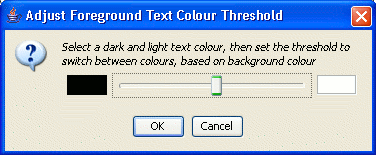

The Colour→Text Colour menu entry opens the "Adjust Foreground Text Colour Threshold" dialog box, allowing the colour of symbols rendered on dark or light backgrounds to be set for the current selection or the whole alignment.

The dialog box contains a slider, and two colour icons showing the text colour for dark backgrounds (left hand end of slider), and light backgrounds (right hand end of slider). Drag the slider to change the threshold for transitioning between dark and light background colours, and select either of the colour boxes to open a colour chooser to select a different text colour.